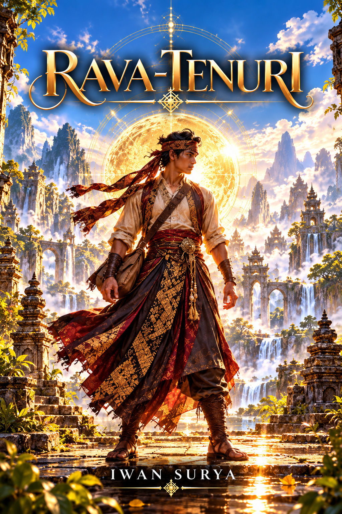
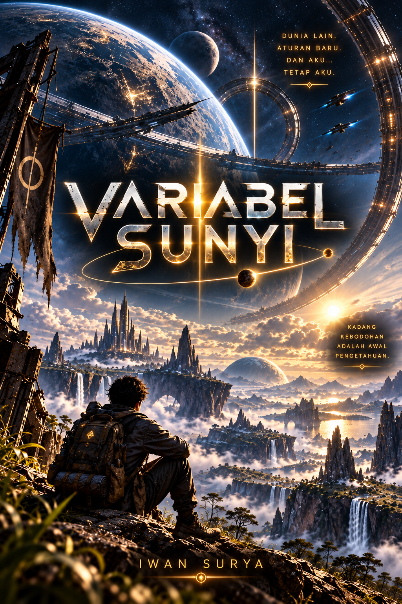
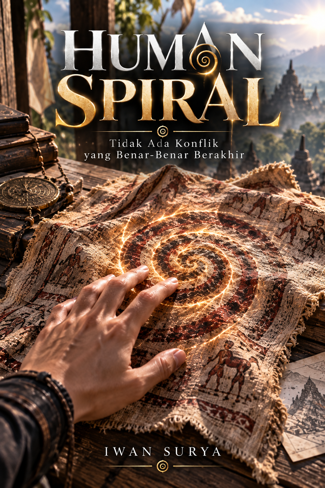
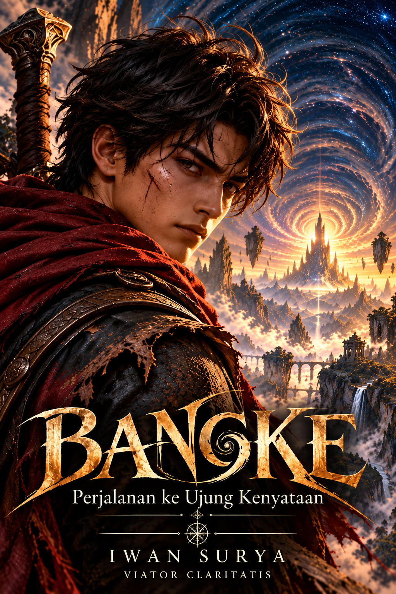
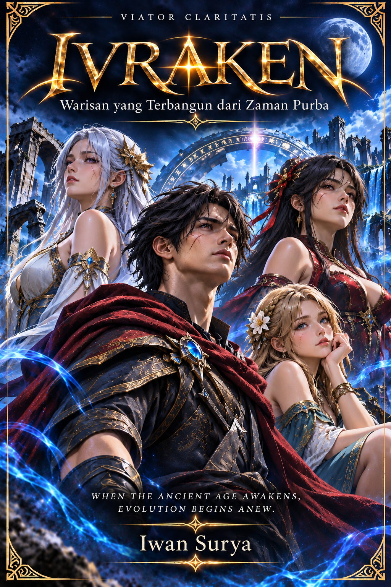
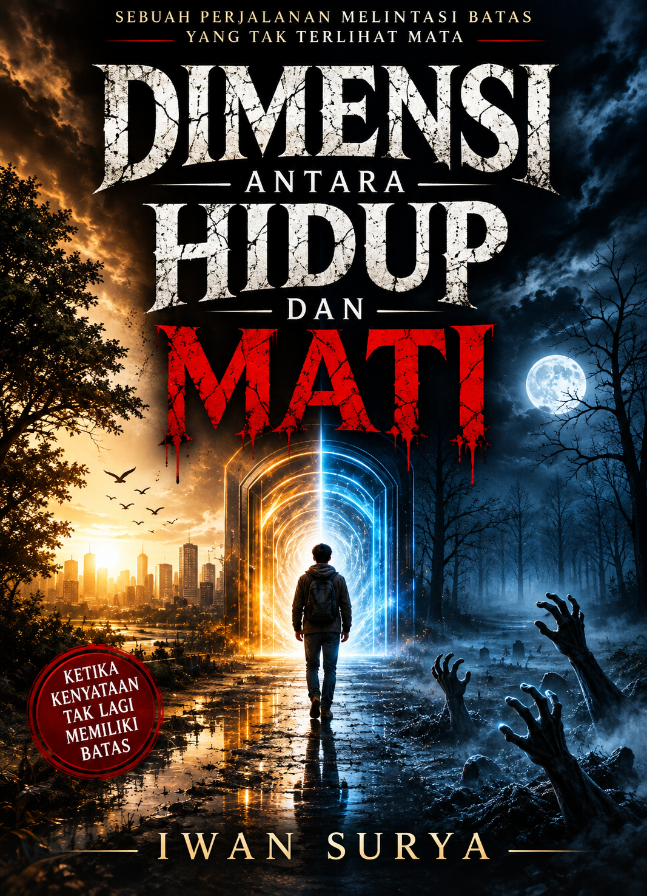

viator claritatisPintu PertamaSAMPUL MENYUSUL
SAGA VIATOR · SELESAIPintu Pertama
Salah satu dari dua karya Saga Viator yang telah dibuat. Berdiri sebagai pintu masuk cerita dalam rangkaian tersebut.
01 / RUANG FIKSI
Katalog karya fiksi Iwan Surya. Setiap proyek memiliki dunia, konflik, dan jalannya sendiri. Novel tidak harus saling terhubung untuk berada dalam ruang karya yang sama.
Cari judul atau tema. Status menunjukkan tahap kerja yang diketahui, bukan penilaian mutu atau jaminan ketersediaan publikasi.
Salah satu dari dua karya Saga Viator yang telah dibuat. Berdiri sebagai pintu masuk cerita dalam rangkaian tersebut.

Karya dalam Saga Viator yang menjadi bagian dari fondasi awal universe cerita.

Naskah fiksi yang telah mencapai penyelesaian.
Baca di QuarterFull ↗
Naskah telah mencapai akhir cerita.
Baca di QuarterFull ↗
Proyek novel yang terus dikembangkan. Cerita bergerak melalui perubahan keadaan, bukti, dan pemahaman tokohnya.
Baca di QuarterFull ↗
Novel mandiri yang mengamati konflik manusia dan pola yang diwariskan dalam bentuk berbeda.
Baca di QuarterFull ↗
Proyek fiksi yang masih berlanjut dalam pengembangan naskah.
Baca di MaxNovel ↗
Kisah berlatar Republik Vantara tentang pekerja, penerimaan negara, penyimpangan, dan pertanggungjawaban.

Perjalanan ke Ujung Kenyataan. Fantasi petualangan mandiri dengan Jagra sebagai tokoh utama dan Karsena sebagai guru.

Fantasi tentang Raizen, garis keturunan Zerathian, dan sejarah peradaban AETHRYON.

Thriller kriminal psikologis berlatar Veynhaven, dengan rancangan cerita enam arc.

Novel yang mengikuti perjalanan Arka dalam rangkaian arc VIATOR, PENULIS, dan CERMIN.
Baca di Fizzo ↗Tidak ada judul yang cocok dengan pencarian.